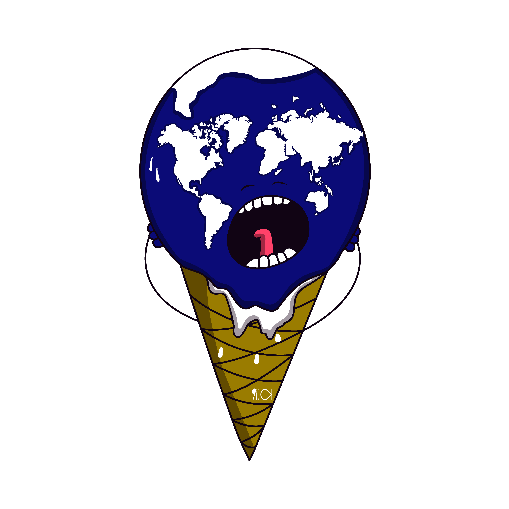
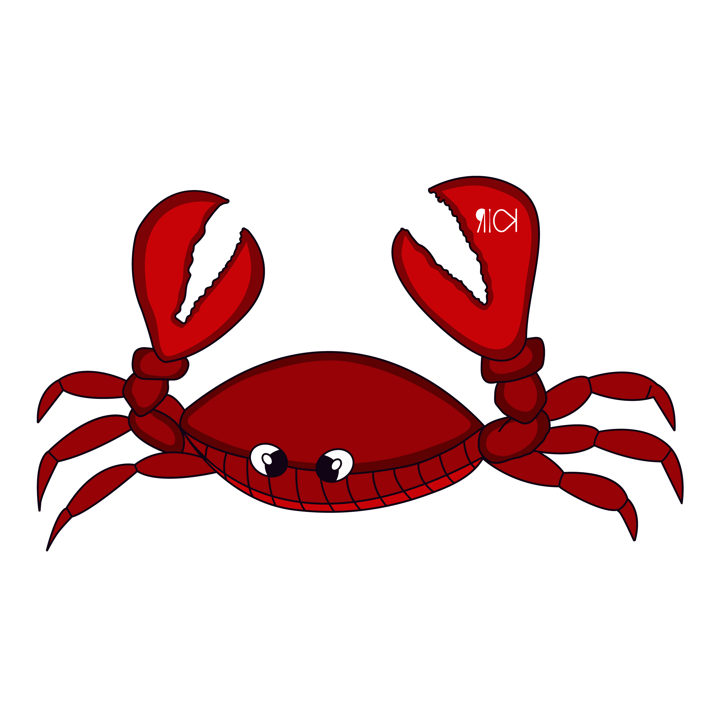
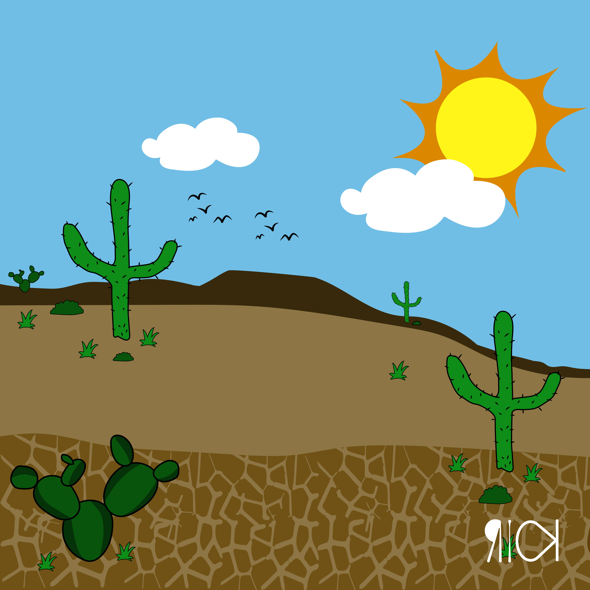
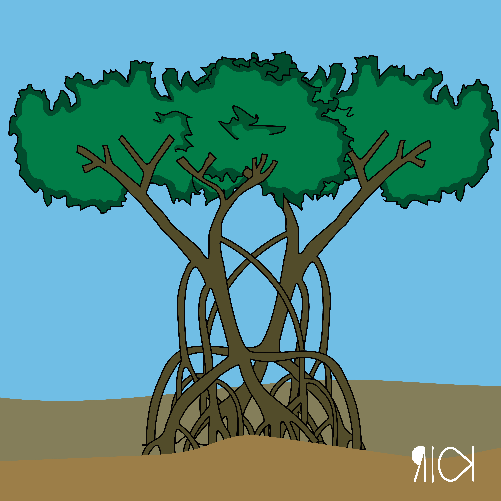

Você sabia?
Ecologia
ÁGUA E MEIO AMBIENTE
A água é um recurso natural essencial para a manutenção da vida em nosso planeta, por meio dela alcançamos o desenvolvimento industrial e agrícola, possibilitando assim o progresso econômico, cultural e intelectual humano.
Ela é utilizada nos mais diversos ciclos, desde os vegetais aos animais, é responsável pela produção de energia elétrica e está presente em quase todas as atividades domésticas, sendo o nosso principal meio de vida, compondo cerca de 70% do nosso corpo.
Podemos obtê-la para beber através dos rios, poços ou lençóis freáticos, porém a maior concentração de água está nos oceanos, onde pudemos acompanhar em 2019 o derramamento de óleo que atingiu principalmente o litoral nordestino brasileiro impactando diretamente 11 estados.
O petróleo é utilizado na produção de combustíveis fósseis, cosméticos, plásticos e os mais variados tipos de materias encontrados no mercado. Seu uso indiscriminado vem causando anomalias em nosso clima deixando a temperatura do globo terrestre ainda mais quente, no mar ele se fixa em corais, produz manchas impermeáveis à luz solar impedindo a continuidade do ciclo de vida de todas as espécies de algas marinhas. O petróleo cru é muito tóxico para os animais, por isso não é recomendado que se coma nenhum crustáceo ou animal marinho que tenha entrado em contato com tais materiais tóxicos. As espécies que dependem da vida marinha para se alimentar podem correr sério risco, a exemplo das aves marinhas que ao se alimentarem também vão estar ingerindo o petróleo consumido pelos peixes ou crustáceos.
Mesmo a água sendo um recurso renovável, a poluição e uso indiscriminado pode comprometer todo o ecossistema marinho e a sobrevivência de animais e plantas, não é difícil encontrarmos nas praias esgoto e lixo, estes materiais precisam ter um descarte adequado para a manutenção do ecossistema e a nossa saúde.
Caatinga
A Caatinga é o bioma que mais prevalece na região do nordeste brasileiro. Seu clima durante a maior parte do ano, mantém-se quente e seco, as plantas perdem suas folhas e somente no período das chuvas as folhas voltam assim compondo a paisagem esverdeada.
A perda das folhas durante o período de seca ajuda as plantas a poupar água, que permanece em seu interior, as folhas são os órgãos responsáveis pela respiração das plantas, assim como, a transpiração.
As plantas mais abundantes neste bioma podem ser facilmente lembradas, a exemplo dos cactos, dentre eles podemos destacar: o mandacaru, o xiquexique e a palma.
Os cactos, não possuem folhas, em seu lugar eles apresentam espinhos, seu caule é verde e permite a fotossíntese, ele armazena muita água em seu interior o que é importante em períodos de seca pois favorece a sobrevivência da espécie.
A fauna deste bioma é constituída por mamíferos, répteis, aves e anfíbios, dentre eles podemos destacar o tatú, a jararaca, o preá, e o carcará. Estes animais possuem hábitos noturnos, peles e escamas mais rígidas, o que gera uma adaptação melhor ao ambiente, fazendo com que haja menor perda de calor facilitando a regulação térmica.
Na Caatinga, assim como diversos outros biomas brasileiros, ocorrem ameaças que interferem diretamente com seu desenvolvimento natural, como a captura de espécies pelo tráfico ilegal de animais, queimadas ilegais e desmatamento para criação de bovinos.
Cerrado
O cerrado é o segundo maior bioma brasileiro, abrangendo 12 estados brasileiros, localizado majoritariamente na região central do Brasil, nos estados de Minas Gerais, Mato Grosso e Mato Grosso do Sul.
Sua vegetação típica é composta por árvores espaçadas, baixas e retorcidas, além de possuir vegetação rasteira semelhante ao capim.
O cerrado tem um período médio de 6 meses de seca entre abril e agosto, onde acontecem as queimadas naturais por conta da vegetação seca e dos raios solares fortes, contudo as queimadas são benéficas ao ambiente, pois permitem o processo de germinação de sementes que estão em dormência.
Existem plantas que só florescem após as queimadas, assim como outras que possuem troncos com cascas mais grossas com finalidade de se proteger das chamas. Este bioma sofre drasticamente com queimadas criminosas provocadas por humanos, pois estas não possuem o controle necessário ocasionando desequilíbrio.
Desde a década de 60 este bioma vem sofrendo desmatamento com suas áreas utilizadas para pecuária e produção agrícola, destacando a criação de bovinos e plantações de soja.
A fauna deste ambiente pode ser facilmente ilustrada com animais como: lobo-guará, tamanduá-bandeira, veado-campeiro e diversas serpentes. Neste bioma se localizam duas nascentes de rios que compõem as principais bacias hidrográficas brasileiras e também o aquífero Guarani.
Mangue

O manguezal é um ecossistema de transição entre o ambiente terrestre e marinho, localizados entre as margens dos rios e a foz (encontro do rio com o mar). O solo dos manguezais por sua vez é bastante rico em nutrientes, porém pobre em oxigênio o que delimita a quantidade de espécies neste local.
As plantas que compõem a vegetação deste local possuem adaptações em suas raízes, que servem como suporte ou área de auxílio na respiração das plantas. O solo encontrado neste local é úmido e lodoso, o que dificulta a fixação das raízes.
Os manguezais podem ser facilmente considerados como berçários naturais da vida marinha, sendo muito procurados por crustáceos e aves que encontram neste lugar alimento e segurança para os seus filhotes indefesos.
Este ecossistema possui um cheiro que se assemelha a ovo podre, isso acontece devido a grande quantidade de matéria orgânica presente que favorece a ação dos organismos decompositores como: fungos e bactérias.
Pantanal

O pantanal localiza-se nos estados do Mato Grosso e Mato Grosso do Sul além de se estender entre a Bolívia e o Paraguai.
Durante sete meses corridos ocorrem chuvas constantes neste local, fazendo com que oscile o nível das águas, é neste período também que os rios e lagos costumam transbordar, podendo alagar até metade de todo o território do pantanal.
Sua fauna é composta por anfíbios, répteis, aves, mamíferos e peixes. Pode-se destacar dentre estes: jacarés, piranha e o tuiuiú.
A flora exuberante é composta com características de outros biomas como o Cerrado, Caatinga, Mata Atlântica e Floresta Amazônica.
A principal ameaça deste bioma é a pesca predatória, esta por sua vez acaba tirando a fonte de alimento dos jacarés e das aves da região, além de muitas vezes interferir diretamente na reprodução dos peixes.